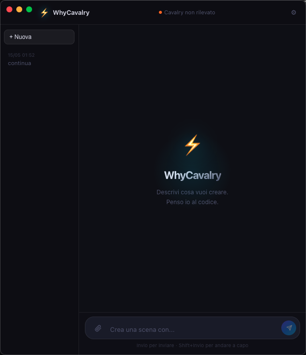

Claude generates the Cavalry JavaScript from your words and fires it live in your open scene via AppleScript. No copy-paste. No context switching. Words become animation.

capabilities
The full Cavalry.js API — shapes, modifiers, expressions, connectors, timing — all accessible in plain language.
philosophy
The clipboard is not a workflow. WhyCavalry eliminates every step between idea and animation.
The standard workflow: write prompt in ChatGPT → copy → switch to Cavalry → paste into Scripts → run. WhyCavalry eliminates every step after the first sentence.
The file bridge writes to ~/.whycavalry/. AppleScript triggers Cavalry's Scripts menu. You never touch the clipboard. You never switch context. The animation appears while you are still looking at the chat.
Claude knows the full Cavalry.js API — shapes, modifiers, expressions, connectors, timing functions. Not a wrapper. Not a prompt template.
The sidebar tracks all sessions. "Make it faster" works because Claude has the previous script in context. Iterative motion design.
Script lands in Cavalry and runs immediately. Feedback loop under 3 seconds. Iterate faster than manual keyframing.
Claude Code CLI runs on Claude Pro subscription. No API key. No per-request billing. Use it all day.
architecture
Electron app → Claude Code CLI → file bridge → AppleScript → Cavalry Scripts menu. One direction. Zero latency for the human.
technical
Native macOS app. Dark UI, conversation sidebar, session history. Launches as a standalone app or from the dock.
claude --print for each generation. Claude has full context of the Cavalry.js API and your conversation history.
Generated script written to ~/.whycavalry/script.js. Atomic write ensures Cavalry always reads a complete file.
osascript tells Cavalry to run the script via its Scripts menu. No plugin required. Works with any Cavalry version that supports scripting.
Sidebar stores all past sessions. Reference previous scripts, refine animations, build on past work without restarting.
Cavalry installed and open with an active scene. Claude Code CLI authenticated. That is all.
motion vocabulary
WhyCavalry is not an AI plugin. It is a bridge that makes AI invisible — you stay in the creative flow, the animation appears, the conversation continues. No switching. No pasting. No interruption.
get started
Install, open Cavalry with a scene, run WhyCavalry, and type. The first animation runs in under 30 seconds from setup.